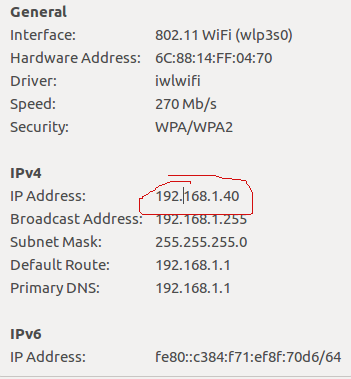

Basé sur le tutoriel réalisé par Aqua
Ubuntu 14.04 +
Pour aller plus vite, image à importer dans virtualbox Cryptotux
déjà installés sur Cryptotux
#indispensable git
sudo apt-get install git
#outils
sudo apt-get install build-essential libtool autotools-dev automake pkg-config libssl-dev libevent-dev bsdmainutils python3 software-properties-common
#librairie boost. Alternative plus complete : sudo apt-get install libboost-all-dev
sudo apt-get install libboost-system-dev libboost-filesystem-dev libboost-chrono-dev libboost-program-options-dev libboost-test-dev libboost-thread-dev
déjà installés sur Cryptotux
#depot bitcoin pour récupérer une version précédent de libdb
sudo add-apt-repository ppa:bitcoin/bitcoin
sudo apt-get update
sudo apt-get install libdb4.8-dev libdb4.8++-dev
#Optionnel
sudo apt-get install libminiupnpc-dev libzmq3-dev
#librairies graphiques (Qt5)
sudo apt-get install libqt5gui5 libqt5core5a libqt5dbus5 qttools5-dev qttools5-dev-tools libprotobuf-dev protobuf-compiler
git clone -b 0.8 https://github.com/litecoin-project/litecoin.git
src/rpcrawtransaction.cpp
ligne 242
Enlever : & et const
const CScriptID& hash = boost::get< constCScriptID&>(address);
find . -type f -print0 | xargs -0 sed -i 's/litecoin/bricocoin/g'
find . -type f -print0 | xargs -0 sed -i 's/Litecoin/Bricocoin/g'
find . -type f -print0 | xargs -0 sed -i 's/LiteCoin/BricoCoin/g'
find . -type f -print0 | xargs -0 sed -i 's/LITECOIN/BRICOCOIN/g'
find . -type f -print0 | xargs -0 sed -i 's/LTC/BRC/g'
A lancer depuis le répertoir src/. Vous pouvez remplacer BriCoin par le nom de votre choix.
make -f makefile.unix
Vous devriez maintenant avoir un executable : bricocoind
#/home/USER/BricoCoin/src/
On remplace les ports de litecoin 9333/9332 par 6333/6332 (aléatoire)
find . -type f -print0 | xargs -0 sed -i 's/9333/6333/g'
find . -type f -print0 | xargs -0 sed -i 's/9332/6332/g'
fichier base58.h
ligne 275
PUBKEY_ADDRESS = 25, // Bricocoin addresses start with B
PUBKEY_ADDRESS_TEST = 85,
La liste des codes est ici
#/home/USER/BricoCoin/
A placer hors du dossier, en local
openssl ecparam -genkey -name secp256k1 -out alertkey.pem
openssl ec -in alertkey.pem -text > alertkey.hex
openssl ecparam -genkey -name secp256k1 -out genesiscoinbase.pem
openssl ec -in genesiscoinbase.pem -text > genesiscoinbase.hex
En supprimant les ":"
static const char* pszTestKey = "04d67f78ca51075ba965efe950ce4fac72a4a2f2109c0fd0f493418e7a877b8b1b51355fe1660ead9c05d9a7ff0dceba0d287b906ff78d059a7dd9f075a1283ef9";
ligne 2788
txNew.vout[0].scriptPubKey = CScript() << ParseHex("04d67f78ca51075ba965efe950ce4fac72a4a2f2109c0fd0f493418e7a877b8b1b51355fe1660ead9c05d9a7ff0dceba0d287b906ff78d059a7dd9f075a1283ef9") << OP_CHECKSIG;
ligne 3082 de main.cpp
(Choix aléatoires)
unsigned char pchMessageStart[4] = { 0xfa, 0xc2 , 0xb1, 0xdb }; // BricoCoin: increase each by adding 2 to bitcoin's value.
PeerMagic: "identifiant" qui permet d'annoncer que le message qu'on envoie concerne telle blockchain
ligne 1176 de net.cpp
static const char *strMainNetDNSSeed[][2] = {
{NULL, NULL}
};
static const char *strTestNetDNSSeed[][2] = {
{NULL, NULL}
};
lign 1226 de net.cpp
laisser "0x0" pour éviter une erreur de compilation
unsigned int pnSeed[] =
{
0x0
};
Avant de faire cette partie, testez la compilation à nouveau.
main.cpp ligne 1090
int64 static GetBlockValue(int nHeight, int64 nFees)
{
int64 nSubsidy = 10 * COIN;
// Subsidy is cut in half every 10 blocks, which will occur approximately every 20 min
nSubsidy >>= (nHeight / 10); // BricoCoin: 10 blocks in ~ 20 minutes
return nSubsidy + nFees;
}
static const int64 nTargetTimespan = 0.007 * 24 * 60 * 60; // BricoCoin : 10 minutes between difficulty adjustments
static const int64 nTargetSpacing = 2 * 60; // BricoCoin: 2 minutes between blocks
main.cpp ligne 2787
txNew.vout[0].nValue = 10 * COIN;
main.h ligne 55
On choisit le nombre maximal de BricoCoins, calculé à partir de la somme des "subsidy" 10 * 10 + 10 * 10/2 + 10 * 10/4 + 10 * 10/6 + ... ~= 200
static const int64 MAX_MONEY = 200 * COIN;
main.h ligne 58
static const int COINBASE_MATURITY = 1;
main.cpp ligne 948
int CMerkleTx::GetBlocksToMaturity() const
{
if (!IsCoinBase())
return 0;
return max(0, (COINBASE_MATURITY+5) - GetDepthInMainChain());
}
main.h ligne 627
1 block / 2 min sur une période de 10 minutes : 10 / 2 = 5
static bool AllowFree(double dPriority)
{
// Large (in bytes) low-priority (new, small-coin) transactions
// need a fee.
return dPriority > COIN * 5 / 250;
}
main.cpp 2782
const char* pszTimestamp = "25/01/2018 Atelier créer sa propre crypto-monnaie";
Dans le terminal
date +%s
main.cpp ligne 2794
block.nTime = 1515165286;
Fusion des noeuds de même niveau en un seul Hash
make -f makefile.unix
./bricocoind
Ouvrir à /home/USER/.bricocoin/debug.log
2018-01-25 15:51:57 7z5cd2bc0f49e58a5587734366a558f78cecec6f9489fdafed3660dad53a3864
main.cpp ligne 2809
assert(block.hashMerkleRoot == uint256("0x7z5cd2bc0f49e58a5587734366a558f78cecec6f9489fdafed3660dad53a3864"));
Code nécessaire pour générer le 1er block
Copiez le !
if (true && block.GetHash() != hashGenesisBlock)
{
printf("Searching for genesis block...\n");
// This will figure out a valid hash and Nonce if you're
// creating a different genesis block:
uint256 hashTarget = CBigNum().SetCompact(block.nBits).getuint256();
uint256 thash;
char scratchpad[SCRYPT_SCRATCHPAD_SIZE];
loop
{
#if defined(USE_SSE2)
// Detection would work, but in cases where we KNOW it always has SSE2,
// it is faster to use directly than to use a function pointer or conditional.
#if defined(_M_X64) || defined(__x86_64__) || defined(_M_AMD64) || (defined(MAC_OSX) && defined(__i386__))
// Always SSE2: x86_64 or Intel MacOS X
scrypt_1024_1_1_256_sp_sse2(BEGIN(block.nVersion), BEGIN(thash), scratchpad);
#else
// Detect SSE2: 32bit x86 Linux or Windows
scrypt_1024_1_1_256_sp(BEGIN(block.nVersion), BEGIN(thash), scratchpad);
#endif
#else
// Generic scrypt
scrypt_1024_1_1_256_sp_generic(BEGIN(block.nVersion), BEGIN(thash), scratchpad);
#endif
if (thash <= hashTarget)
break;
if ((block.nNonce & 0xFFF) == 0)
{
printf("nonce %08X: hash = %s (target = %s)\n", block.nNonce, thash.ToString().c_str(), hashTarget.ToString().c_str());
}
++block.nNonce;
if (block.nNonce == 0)
{
printf("NONCE WRAPPED, incrementing time\n");
++block.nTime;
}
}
printf("block.nTime = %u \n", block.nTime);
printf("block.nNonce = %u \n", block.nNonce);
printf("block.GetHash = %s\n", block.GetHash().ToString().c_str());
}
ligne 2798
if (fTestNet)
{
block.nTime = 1515165286;
block.nNonce = 387357830;
}
Collez ici
Compilez
make -f makefile.unix
./bricocoind
Debug.log
2018-01-25 16:00:00 block.nNonce = 2085850195
2018-01-25 16:00:00 block.getHash = 03454bf05bd73a9dcddcdc43a2d81afb2481e3fbd1c3d43f70e6ecc8dc7ae46c
main.cpp ligne 2796
block.nNonce = 2085850195;
main.cpp ligne 38
uint256 hashGenesisBlock("0x03454bf05bd73a9dcddcdc43a2d81afb2481e3fbd1c3d43f70e6ecc8dc7ae46c");
checkpoints.cpp
copiez le hash et le nTime du genesis block
static MapCheckpoints mapCheckpoints =
boost::assign::map_list_of
( 0, uint256(" 0x03454bf05bd73a9dcddcdc43a2d81afb2481e3fbd1c3d43f70e6ecc8dc7ae46c "))
Supprimez le reste
;
static const CCheckpointData data = {
&mapCheckpoints,
1515165286 // (block.nTime = 1515165286; (main.cpp ligne 2794) ), // * UNIX timestamp of last checkpoint block
0, // * total number of transactions between genesis and last checkpoint
// (the tx=... number in the SetBestChain debug.log lines)
1.0 // * estimated number of transactions per day after checkpoint
};
Annulez le hack pour générez le block génésis
main.cpp ligne 2809
if ( false && block.GetHash() != hashGenesisBlock)
{
printf("Searching for genesis block...\n");
// This will figure out a valid hash and Nonce if you're
// creating a different genesis block:
uint256 hashTarget = CBigNum().SetCompact(block.nBits).getuint256();
uint256 thash;
char scratchpad[SCRYPT_SCRATCHPAD_SIZE];
make -f makefile.unix
#/home/USER/bricocoin/
qmake
make
Lancez l'interface
./bricocoin-qt
#/home/USER/.bricocoin/bricocoin.conf
server=1
rpcuser=user
rpcpassword=password
#/home/USER/.bricocoin/bricocoin.conf

addnode=192.168.1.13
#/home/USER/bricocoin/src
make -f makefile.unix
#/home/USER/bricocoin/
qmake
make
./bricocoin-qt
setgenerate true
http://lesbricodeurs.fr/creersaproprecryptomonnaie/
Autre tuto :
https://vcoin-project.github.io/cloning-litecoin/
Livre complet de référence :
https://bitcoinbook.info/translations/fr/book.pdf
Pourboires des transactions du réseau bitcoin :
http://bitcoinfees.com/